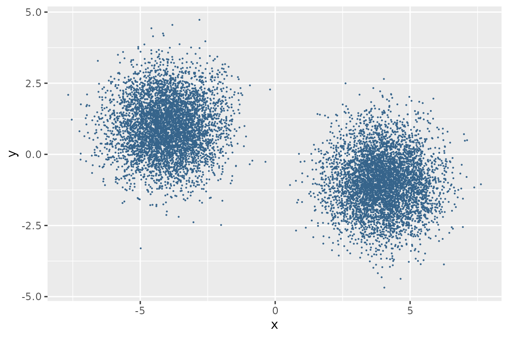
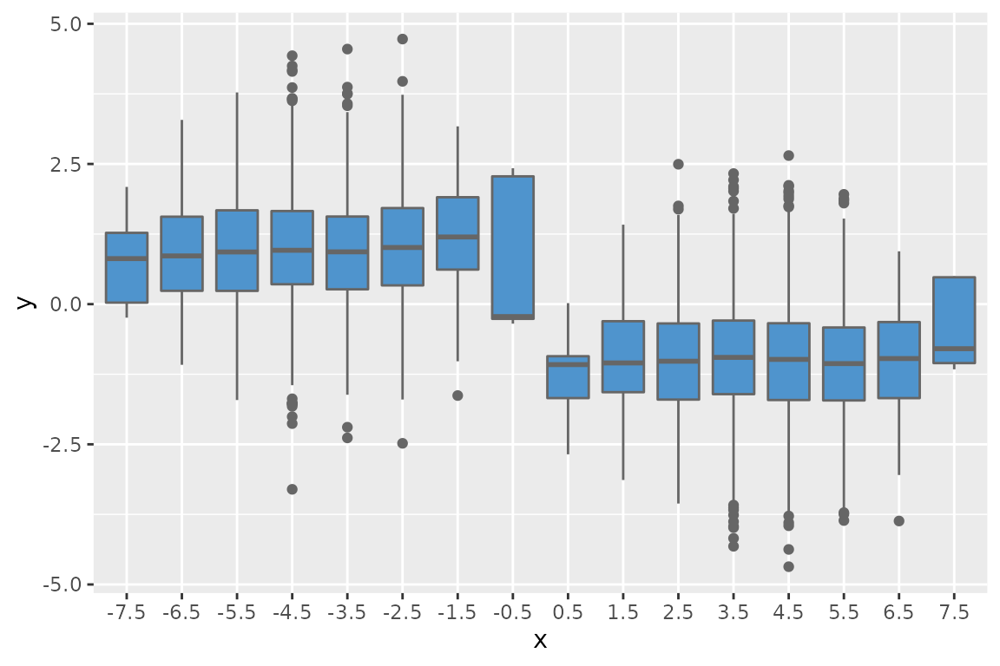
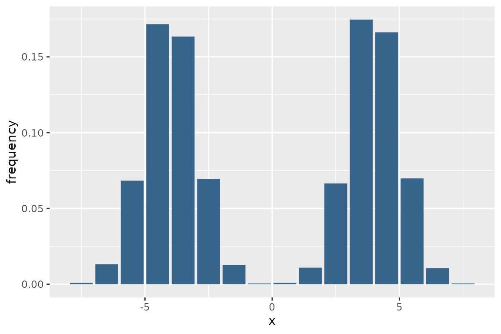

This vignette shows how to obtain a boxplot or histogram given a dataframe of points in a plane.
Boxplot
A density analysis in one dimension can be performed on points lying on a line suitably divided into segments, that is, different \(x\) and \(y = 0\), or on a set of points in the plane which is divided into strips.
If we consider a plane divided into strips, the grouping of points
can be shown in a boxplot.
Let’s see how to proceed.
Define dataframe of points
First we define a dataframe of random points
set.seed(1)
df_points <- data.frame(x = c(rnorm(n = 5000, mean = -4),
rnorm(n = 5000, mean = 4)),
y = c(rnorm(n = 5000, mean = 1),
rnorm(n = 5000, mean = -1))
)
ggplot(df_points) +
geom_point(aes(x, y), color = "steelblue4", size = 0.1)
Make 1D grid
Then a one-dimensional grid is built. A one-dimensional grid is defined by the lower bound, the upper bound, and the number of vertical stripes.
# check the extreme values of the points along x
min(df_points$x)
#> [1] -7.6713
max(df_points$x)
#> [1] 7.624361
# define boundaries of grid
(xmin <- floor(min(df_points$x)))
#> [1] -8
(xmax <- ceiling(max(df_points$x)))
#> [1] 8
# define the grid
grid1d <- makeGrid1d(xmin = xmin, xmax = xmax, xcell = 16)
grid1d
#> class : Grid1d
#> dimensions : xcell = 16
#> range : xmin = -8, xmax = 8The criterion for defining the grid boundaries and the number of strips varies from time to time based on the data and the type of analysis.
Get the boxplot
Finally we get the boxplot using getBoxplot() function.
The getBoxplot() function takes as input an object of class
Grid1d and a dataframe of points. If the input dataframe
has more than two columns, the first two will be automatically
selected.
df_boxplot <- getBoxplot(grid1d, df_points)
head(df_boxplot)
#> xbp x y
#> 1 -4.5 -4.626454 0.19566840
#> 2 -3.5 -3.816357 -0.05652565
#> 3 -4.5 -4.835629 -0.03539578
#> 4 -2.5 -2.404719 -0.18556035
#> 5 -3.5 -3.670492 0.49956049
#> 6 -4.5 -4.820468 0.47501129getBoxplot() assigns the same x value to
all points within the same strip. The xbp column is a
factor.
ggplot(df_boxplot)+
geom_boxplot(aes(x = xbp, y = y), fill = "steelblue3", color = "grey40") +
labs(x = "x") +
scale_x_discrete(breaks = levels(df_boxplot$xbp), drop = FALSE)
Histogram
There are functions that can generate a histogram and provide all the
information about it. However, a histogram can also be obtained using
the getCell() and getCounts() function of
rgrids.
getCell() function assigns each point of the plane to
its respective strip, counting strips from left to right, while
getCounts() function counts how many points fall within
each strip and returns a dataframe with two columns: the center of the
bin (i.e. the center of the strip) and the count.
df_points$grid_index <- getCell(grid1d, df_points)
#> Warning in getCell(grid1d, df_points): data.frame passed to a Grid1d object;
#> only first column was selected
head(df_points)
#> x y grid_index
#> 1 -4.626454 0.19566840 4
#> 2 -3.816357 -0.05652565 5
#> 3 -4.835629 -0.03539578 4
#> 4 -2.404719 -0.18556035 6
#> 5 -3.670492 0.49956049 5
#> 6 -4.820468 0.47501129 4
df_hist <- getCounts(grid1d, df_points$grid_index)
head(df_hist)
#> x counts
#> 1 -7.5 9
#> 2 -6.5 132
#> 3 -5.5 683
#> 4 -4.5 1715
#> 5 -3.5 1634
#> 6 -2.5 695